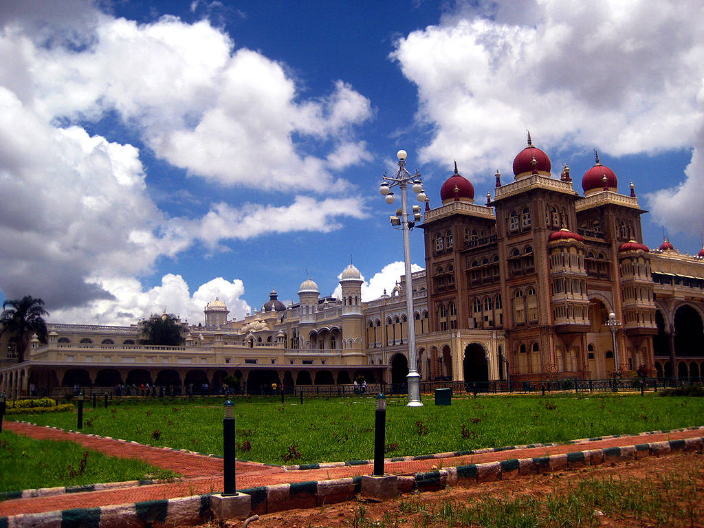

NAME : mysore-palace

The land on which the palace now stands was originally known as puragiri (literally, citadel),
and is now known as the Old Fort. Yaduraya built the first palace inside the Old Fort in the 14th
century, which was demolished and constructed multiple times. The current structure was constructed b
etween 1897 and 1912, after the Old Palace was burnt ablaze.

HOW TO REACH ?
Nearest Airport: shubhampura
Nearest Railway Station:shubhampura
Nearest Bus Stand: shubhampura